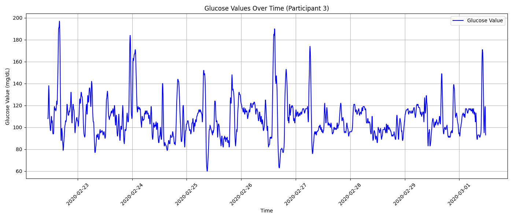
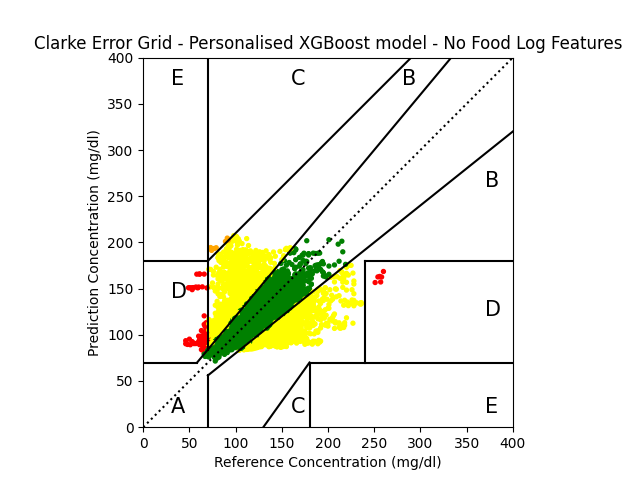

AI for Glucose Prediction from Wearable Data
A multi-task machine learning system predicting personalised glucose levels from wearable physiological data — across classification, regression, and 6-hour time-series forecasting — without requiring invasive continuous glucose monitoring.
Background
Diabetes affects 830 million people worldwide (WHO, 2022) and the number is rising. Continuous glucose monitors (CGMs) help patients manage their condition in real time, but they are invasive — requiring a subcutaneous sensor — and expensive ($100–400/month), placing them out of reach for many. Prediabetes, which precedes type 2 diabetes, often goes undiagnosed entirely.
Wearable devices already measure a rich set of physiological signals — skin conductance, skin temperature, photoplethysmography, and accelerometry — that reflect changes in the autonomic nervous system and metabolism. The hypothesis driving this project: can these non-invasive signals predict glucose levels accurately enough to reduce or replace the need for CGM?
This project investigated three prediction tasks of increasing complexity, and additionally evaluated whether including a food log as an additional data source improves model performance.
Dataset
The publicly available BIG IDEAs Lab Glycaemic Variability and Wearable Device Dataset (Physionet, v1.1.2) was used. It contains data from 16 participants (7 male, 9 female, ages 36–65) with HbA1c values in the high-normal to prediabetic range (5.2–6.4%). Each participant wore two devices simultaneously for 8–10 days:
69 features were engineered in total: 46 from the Empatica E4 using a 5-minute rolling window, 20 from the food log, and 3 additional features (sex, HbA1c, time from midnight). Feature correlation analysis removed redundant features; class imbalance in the classification task was addressed via random downsampling, continuous-sequence removal, and SMOTE oversampling.

Three Prediction Tasks
Results
Feature importance analysis consistently identified EDA-related features, activity features, sex, and circadian rhythm signals (particularly time from midnight) as the most predictive. This reflects known sex differences in glucose metabolism and the strong circadian regulation of insulin sensitivity.
A key finding: models trained without food log features performed comparably to those with food log features for the regression and forecasting tasks. This is practically significant — it means a fully non-invasive, food-log-free wearable system is feasible for glucose monitoring.
SeqFusion's zero-shot results highlighted the potential of foundation model approaches for time-series forecasting in digital health — where labelled data is scarce and personalised retraining is expensive.
